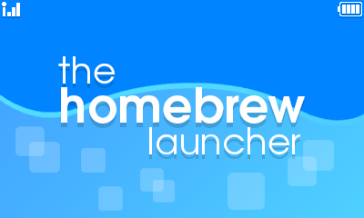

What is homebrew?
Homebrew is the execution of un-signed binaries, usually on closed platforms, such as video game consoles. In the 3DS’ case, homebrew is used for games, apps, emulators, and tools. Pictured below is the Homebrew Launcher Menu on 3DS.
Is homebrew illegal?
No, it isn’t. While pirating content and circumventing DRM is, homebrew is not illegal. It is akin to jailbreaking, or rooting, just under a different term.
What can I do with Homebrew?
You can play games made by other people, such as Turtle Tale, and ports of popular games, like Super Hexagon. You can use emulators and play old games, such as Quake, Doom, or SNES game, and more. There are countless emulators, and with support for RetroArch, the possibilities are limitless. There is even a PSX emulator! One of the cooler things you can do is that there are tools to enhance your user experience. There are tools that edit files on the OS to allow you to content normally blocked (such as developer tools). Region Changing and EmuNand are also on this list.
How can I run homebrew?
For the most part, as long as you’re under version 11.3, you are okay! 11.3 killed most of the homebrew, so if you can update, DON’T DO IT! There is a process on installing homebrew to your console called A9LH permanently, and is considered the holy grail of this hobby. You’ll get easy homebrew access on your home screen, with minimal maintenence and setup. There are stores where you can download homebrew for free right from your 3DS, and there are databases full of these apps! Have fun!
I'm on 11.3 or above, what can I do?
For the most part, you can wait. But there are various exploits on games for the market. You can see these here, and set up homebrew (but not A9LH) easily. Homebrew is less used in 3DSX format, but you can still do a lot of powerful things.
Cool, where can I learn more about Homebrew?
At the top of each page, there is a navigation bar where I have each of the pages listed. Click on any of these to go to the page, or if you want my recommendation, go to History